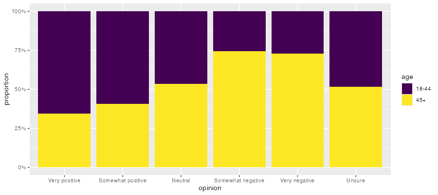
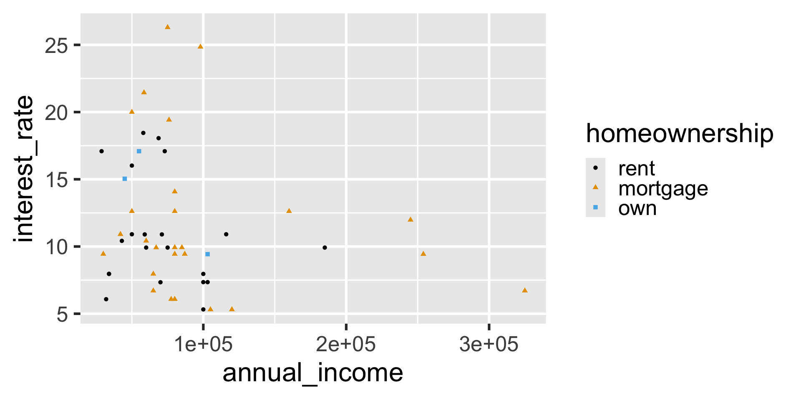
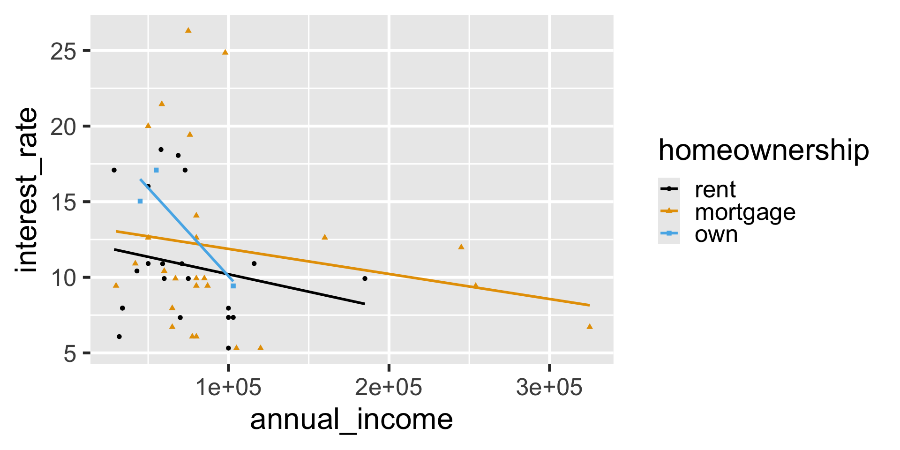
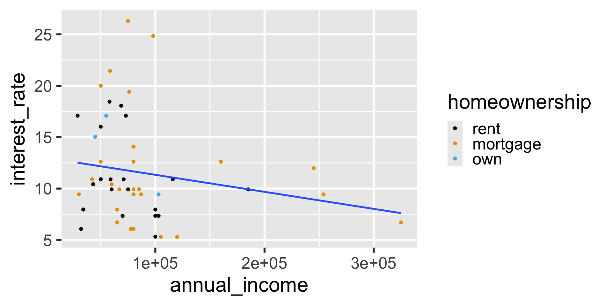
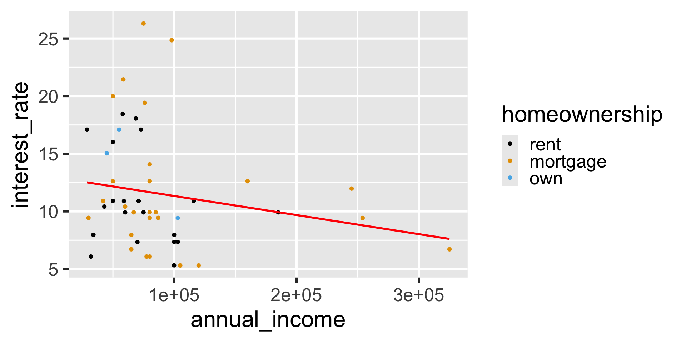
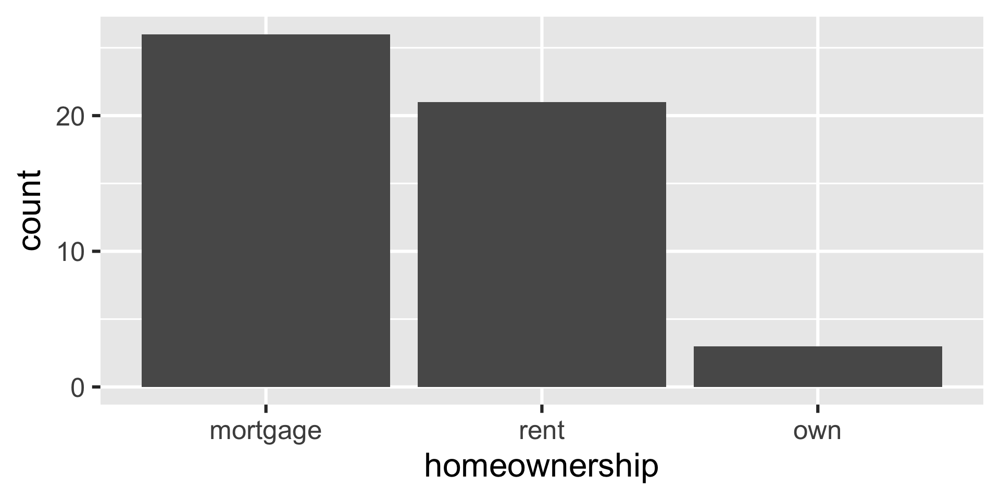

Exam 1 review
Lecture 11
Duke University
STA 199 - Fall 2025
September 30, 2025
Warm-up
While you wait: Participate 📱💻
Why is this a bad visualization for the data from lab yesterday?


Scan the QR code or go to app.wooclap.com/sta199. Log in with your Duke NetID.
Announcements
Cheat sheet: 8.5x11, both sides, hand written or typed, any content you want, must be prepared by you
Bring a pencil and eraser (you’re allowed to use a pen, but you might not want to)
Reminder: Academic dishonesty / Duke Community Standard
From last time
Finish up: ae-08-durham-climate-factors
Go to your ae project in RStudio.
Open
ae-08-durham-climate-factors.qmdand pick up at “Pivot”.
Joins
Setup
Participate 📱💻
Scan the QR code or go to app.wooclap.com/sta199. Log in with your Duke NetID.
What type of join?
Which type of join would you use to find the courses that all students are enrolled in?
# A tibble: 13 × 4
student_id name major course
<chr> <chr> <chr> <chr>
1 S001 Abby History <NA>
2 S002 Jinu Mathematics <NA>
3 S003 Mira Political Science POLSCI 175
4 S003 Mira Political Science STA 199
5 S003 Mira Political Science RELIGION 228
6 S004 Rumi Statistical Science CS 201
7 S004 Rumi Statistical Science STA 240
8 S004 Rumi Statistical Science STA 221
9 S004 Rumi Statistical Science THEATRST 202
10 S005 Zoey Computer Science CS 201
11 S005 Zoey Computer Science STA 199
12 S005 Zoey Computer Science RELIGION 228
13 S005 Zoey Computer Science THEATRST 202What type of join?
Which type of join would you use to find the students for whom we have enrollment information?
# A tibble: 11 × 4
student_id name major course
<chr> <chr> <chr> <chr>
1 S003 Mira Political Science POLSCI 175
2 S003 Mira Political Science STA 199
3 S003 Mira Political Science RELIGION 228
4 S004 Rumi Statistical Science CS 201
5 S004 Rumi Statistical Science STA 240
6 S004 Rumi Statistical Science STA 221
7 S004 Rumi Statistical Science THEATRST 202
8 S005 Zoey Computer Science CS 201
9 S005 Zoey Computer Science STA 199
10 S005 Zoey Computer Science RELIGION 228
11 S005 Zoey Computer Science THEATRST 202What type of join?
Which type of join would you use to find the students for whom we have no enrollment information?
if_else() / case_when()
Collecting data
Suppose you conduct a survey and ask students their student ID number and number of credits they’re taking this semester. What is the type of each variable?
Cleaning data
survey <- survey_raw |>
mutate(
student_id = if_else(student_id == "I don't remember", NA, student_id),
n_credits = case_when(
n_credits == "I'm not sure yet" ~ NA,
n_credits == "2 - underloading" ~ "2",
.default = n_credits
),
n_credits = as.numeric(n_credits)
)
survey# A tibble: 4 × 2
student_id n_credits
<chr> <dbl>
1 273674 4
2 298765 4.5
3 287129 NA
4 <NA> 2 Type coercion
If variables in a data frame have multiple types of values, R will coerce them into a single type, which may or may not be what you want.
If what R does by default is not what you want, you can use explicit coercion functions like
as.numeric(),as.character(), etc. to turn them into the types you want them to be, which will generally also involve cleaning up the features of the data that caused the unwanted implicit coercion in the first place.
Aesthetic mappings
openintro::loan50
# A tibble: 50 × 3
annual_income interest_rate homeownership
<dbl> <dbl> <fct>
1 59000 10.9 rent
2 60000 9.92 rent
3 75000 26.3 mortgage
4 75000 9.92 rent
5 254000 9.43 mortgage
6 67000 9.92 mortgage
7 28800 17.1 rent
8 80000 6.08 mortgage
9 34000 7.97 rent
10 80000 12.6 mortgage
# ℹ 40 more rowsAesthetic mappings
What will the following code result in?
Aesthetic mappings

Global mappings
What will the following code result in?
Global mappings
`geom_smooth()` using formula = 'y ~ x'
Local mappings
What will the following code result in?
Local mappings
`geom_smooth()` using formula = 'y ~ x'
Mapping vs. setting
What will the following code result in?
Mapping vs. setting
`geom_smooth()` using formula = 'y ~ x'
Recap: Aesthetic mappings
Aesthetic mapping defined at the global level will be used by all
geoms for which the aesthetic is defined.Aesthetic mapping defined at the local level will be used only by the
geoms they’re defined for.
Aside: Legends
Aside: Legends
Aside: Legends
Factors
Factors
Factors are used for categorical variables – variables that have a fixed and known set of possible values.
They are also useful when you want to display character vectors in a non-alphabetical order.
Bar plot

Bar plot - reordered
Frequency table
Bar plot - reordered
Under the hood
Recap: Factors
The forcats package has a bunch of functions (that start with
fct_*()) for dealing with factors and their levels: https://forcats.tidyverse.org/reference/index.htmlFactors and the order of their levels are relevant for displays (tables, plots) and they’ll be relevant for modeling (later in the course)
factoris a data class